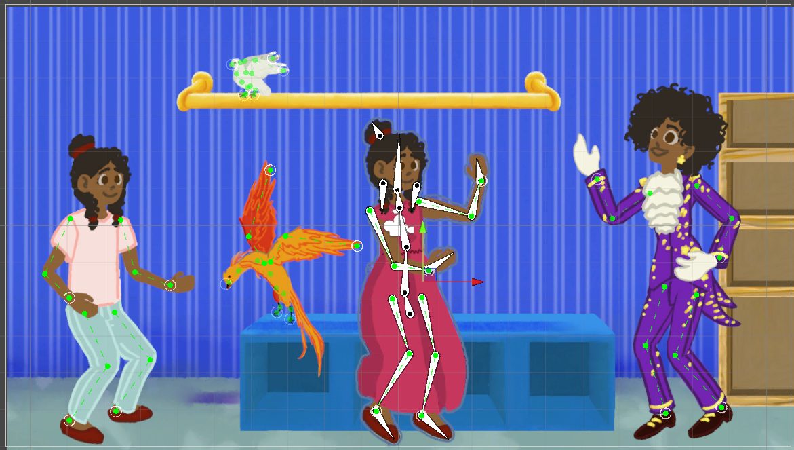
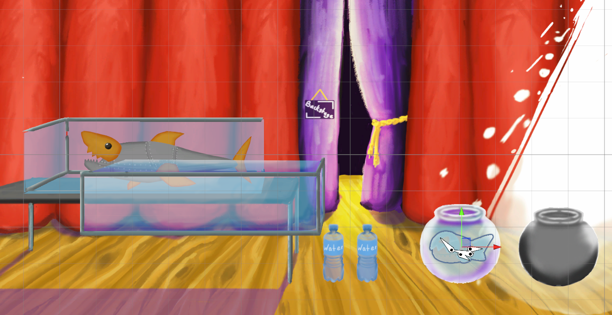
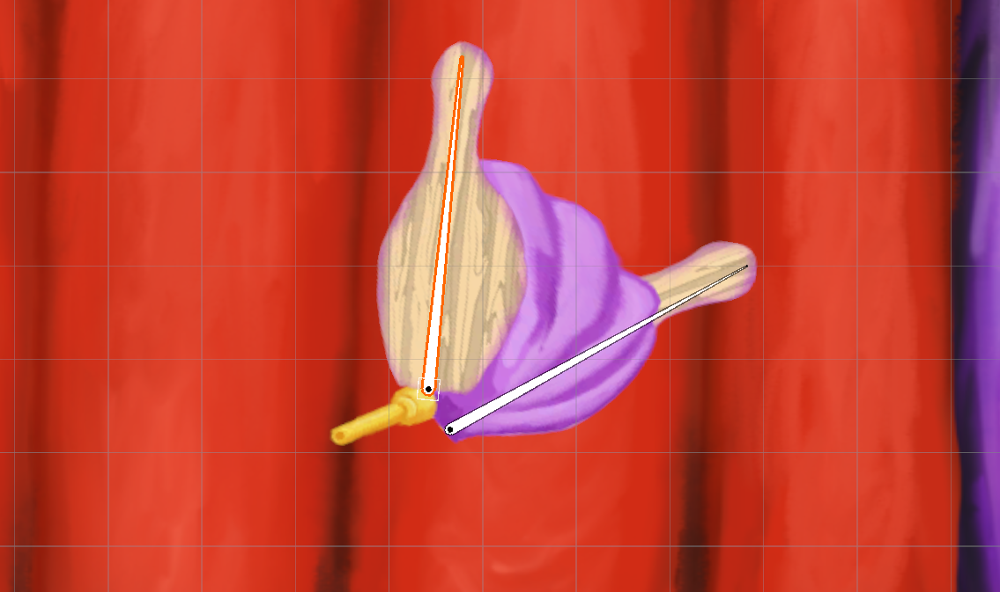

Magician Match
Magician Match is an unreleased educational memory and pattern following game developed by Simcoach Games.
A special thank you to the studio, as Simcoach Games has allowed me to share assets and visuals I created
for their properties during my employment at the studio for portfolio purposes.
In this game, players take on the role of a magician's apprentice, Arel, who helps the magician "Magic Moon"
perform magic tricks by collecting items as requested and setting them in the proper order.
The game features vibrant 2D art, engaging "magic trick" animations, and special effects to create an joyful
and motivating experience.
I was responsible for creating all placeholder and finalized art assets, rigging and animating characters,
and implementing particle effects.
Skills and Responsibilities
- 2D Character Design, and Puppet Creation
- 2D Character Rigging, Weight Painting, and Animation
- 2D Environmental and Object Asset Creation
- Visual Effects Creation using Particle Systems
This breadth in skill and experience enables me to understand the needs of the artists I work with, and
better aid in their issues.
Below are some examples of the work I created for Magician Match.
Magician Match: Rigged and Animated Characters
These rigged and animated characters were some of my favorite assets to work on. Particularly Magic Moon (in
the purple suit). I created concepts for their appearances and outfits, then refined them into 2D puppet
pieces for the finalized character assets.
When creating these characters, I faced three main challenges:
- Enhancing look and feel via puppet layer separation, and weight painting to different parts of the
puppet bones. Ensuring natural movement of hair, cloth, and feathers via a keen eye for detail, careful
weight painting, and trial and error were my toughest accomplishments in this challenge. Sometimes, the
answer was to leave sections unpainted, which aided in visual clarity, and maintained the look of the
original artwork.
- Rigging limbs with inverse kinematics for easier animation process and more natural movement. Figuring
out the correct connection process, bone hierarchy for the first time was the biggest accomplishment,
allowing for speedy and replicable IK in all future models afterward.
- Creating smooth and natural character animations, for both short loops, and extended "magic trick"
sequences. I started with revising the "shuffling" walking animation the programmer made as a test, and
fixed it via adjusting the positions and animation timing. I gave great focus on developing a repetitive
system for developing animations, to speed up new animation creation. By the end, most short looping
animations had a consistent format to begin with and could be created swiftly, before the polishing
stage.


